Each card below is a real deployment: Docker, CI/CD, logging and metrics on the AI apps; live client sites for the rest. Names, links and descriptions match my resume.
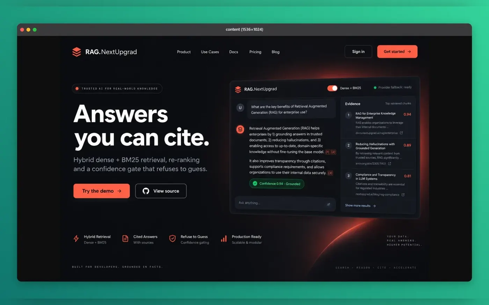
Production RAG with hybrid dense + BM25 retrieval, a hallucination-blocking confidence gate and automatic multi-provider fallback.
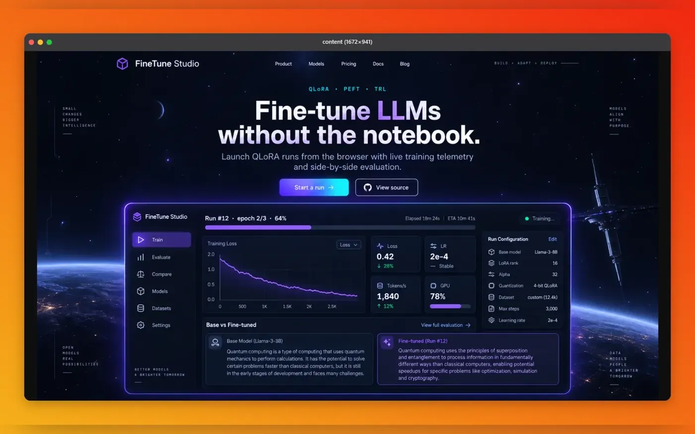
End-to-end QLoRA fine-tuning (HF Transformers / PEFT / TRL) with live loss streaming and base-vs-fine-tuned evaluation.
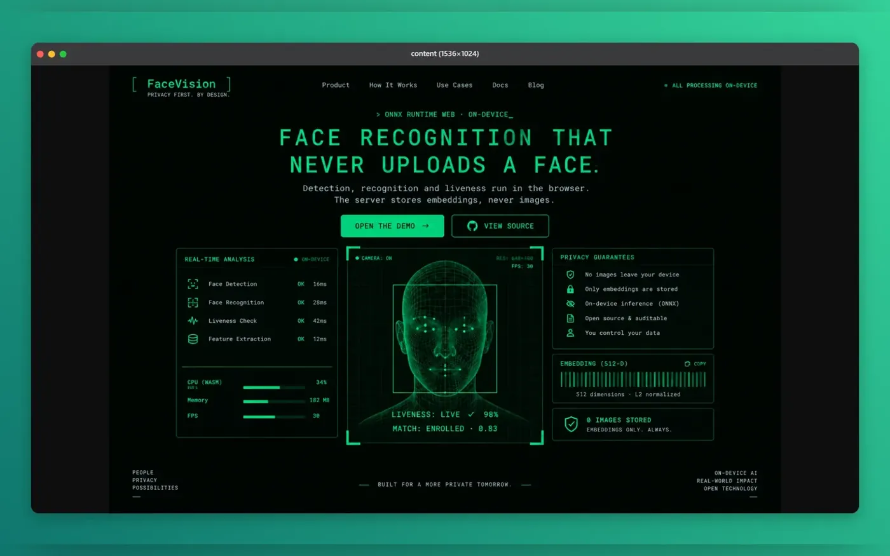
Browser-only face detection, recognition and liveness (ONNX Runtime Web). The FastAPI/PostgreSQL backend stores only embeddings, never images.
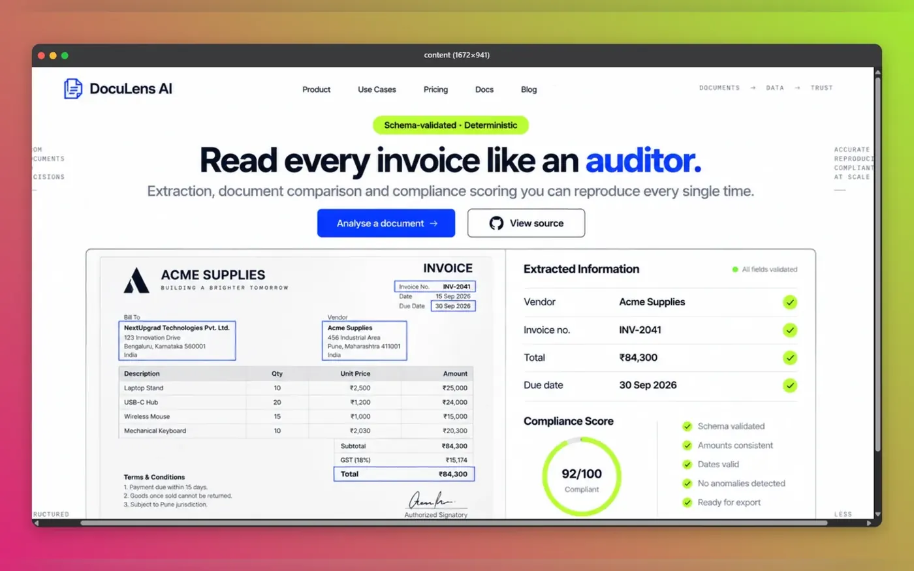
Groq-LLM document intelligence: extracts, compares and compliance-checks invoices and contracts with schema-validated, deterministic scoring.
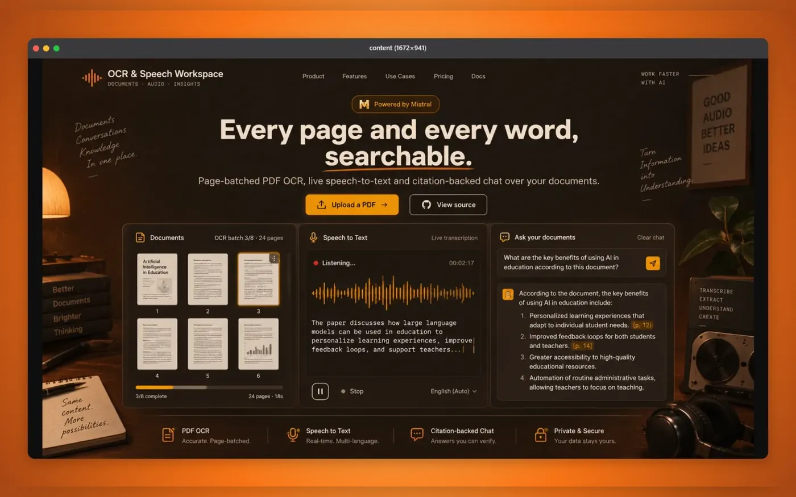
Mistral AI workspace for concurrent page-batched PDF OCR, live speech-to-text and document-scoped RAG chat with citations.
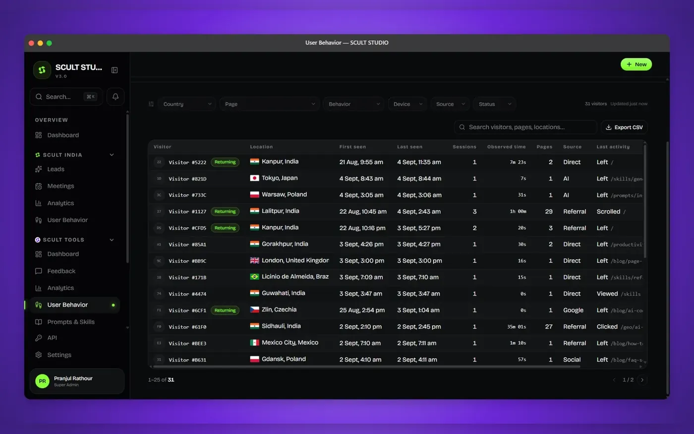
AI-first software agency platform with an internal CRM and workflow management system; the one the 14-member team runs on.
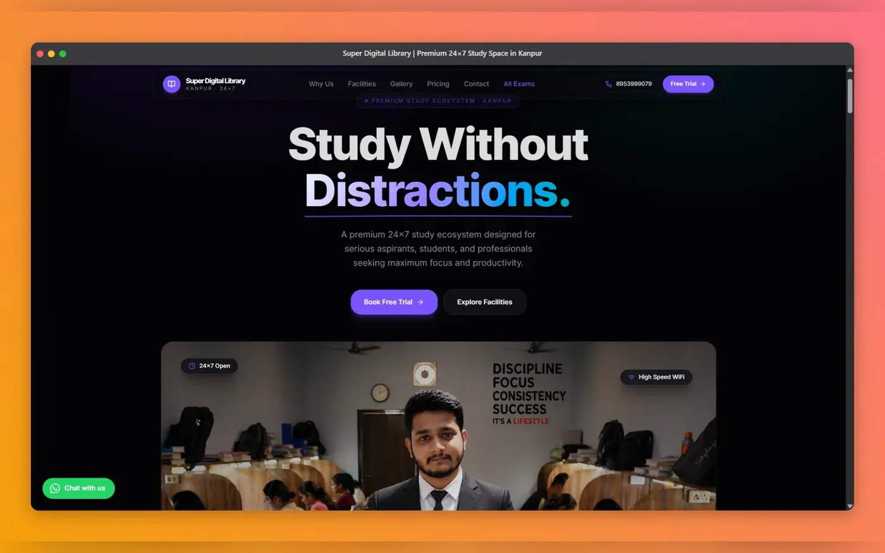
Digital library built on a scalable architecture for organising and accessing large content collections.
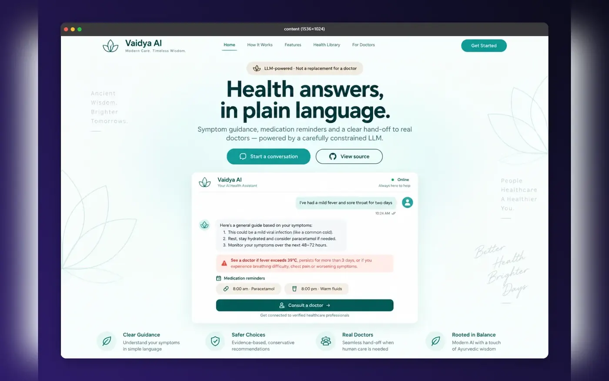
LLM-powered healthcare chatbot delivering conversational patient assistance.
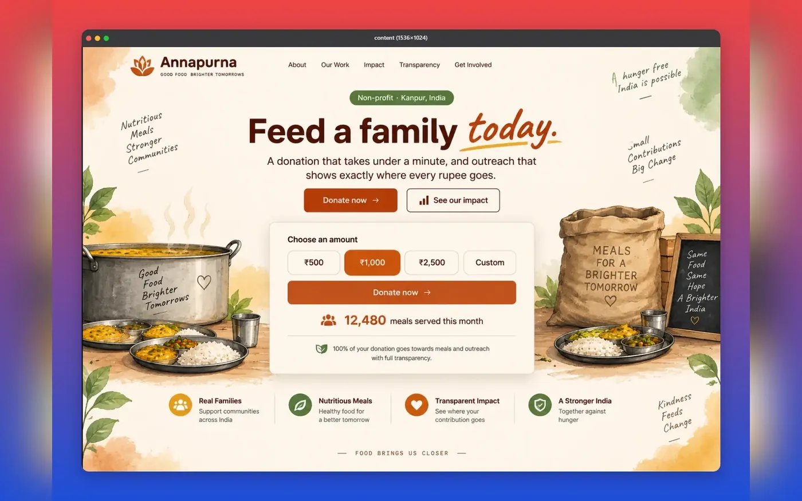
NGO donation platform with a streamlined giving and outreach flow. 1st prize, BYTEBATTLE.
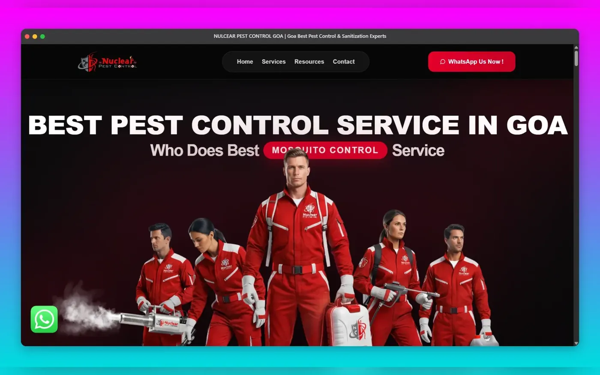
Enterprise business website with SEO optimisation and a fully responsive UI.
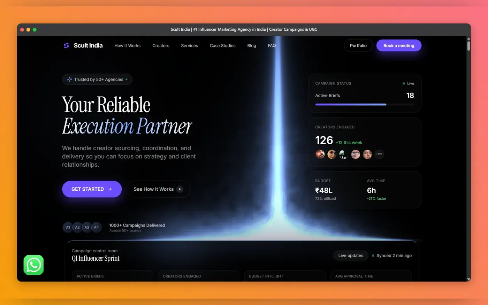
Marketing landing platform for agency service offerings and lead generation.
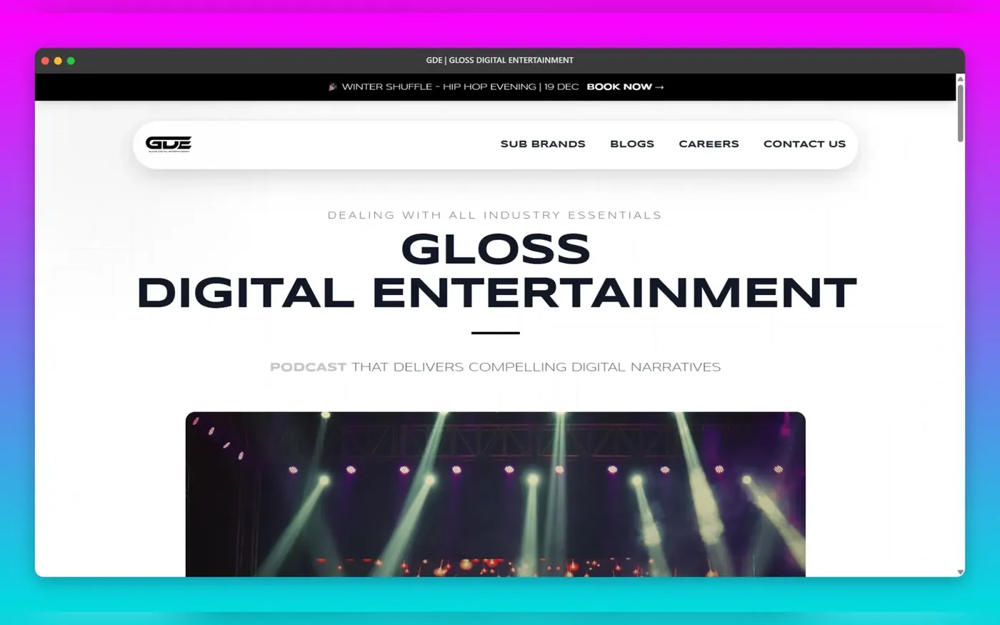
Media platform frontend built with a scalable component architecture.
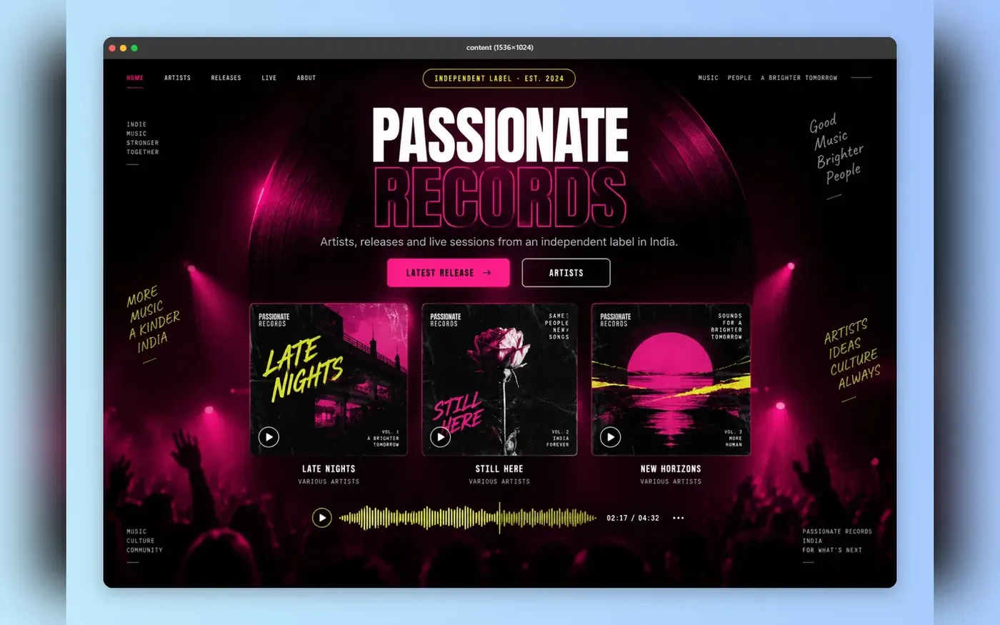
Music label website with a modern, responsive design.